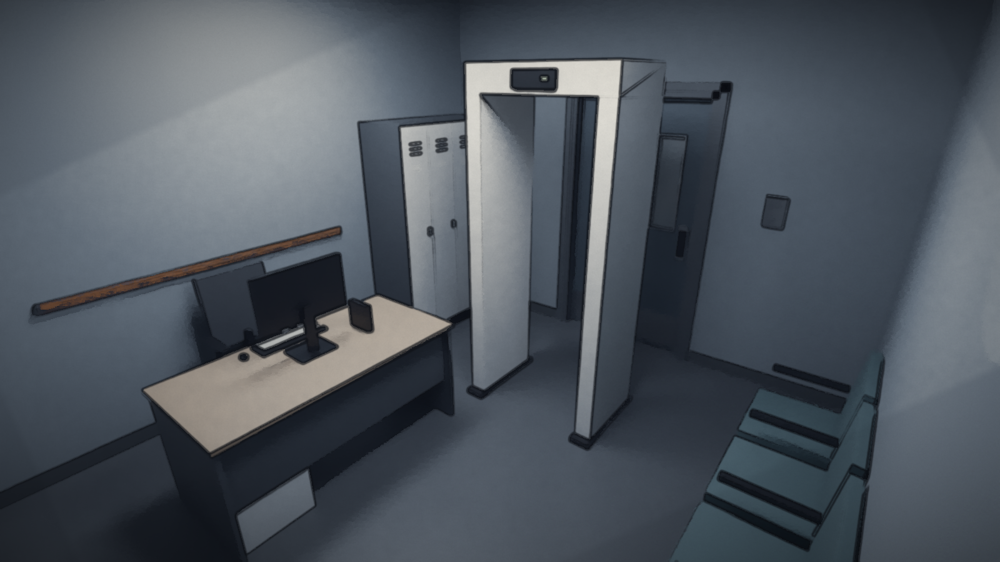
Ashcroft State Forensic Hospital. Today is your first shift as the ward's new psychiatrist.
ch1_pro_01_arrivalExact repository art, text and existing offline voice clips. This page records no approval and changes no game state. Listen on the target Mac and report decisions separately.
Preview the full transitions in Godot using the commands in the Mac checklist.

Ashcroft State Forensic Hospital. Today is your first shift as the ward's new psychiatrist.
ch1_pro_01_arrival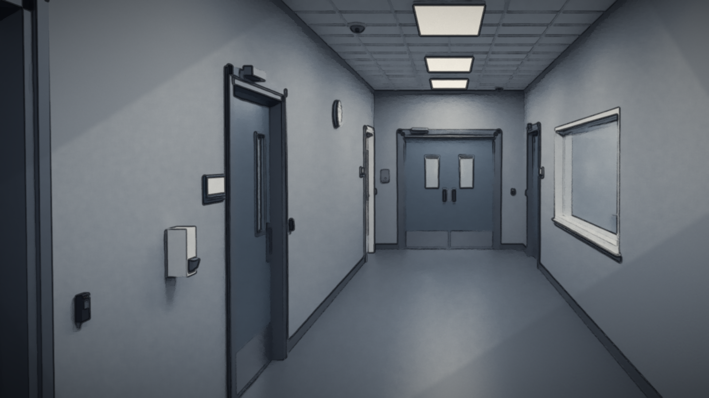
Every door here is logged. Your badge says who you are, and the system decides where you may go.
ch1_pro_02_badge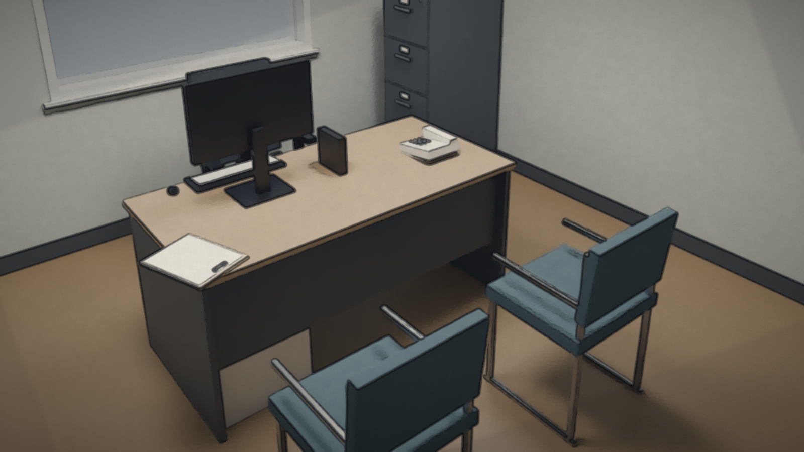
A desk, a terminal, and a caseload you have not met yet.
ch1_pro_03_desk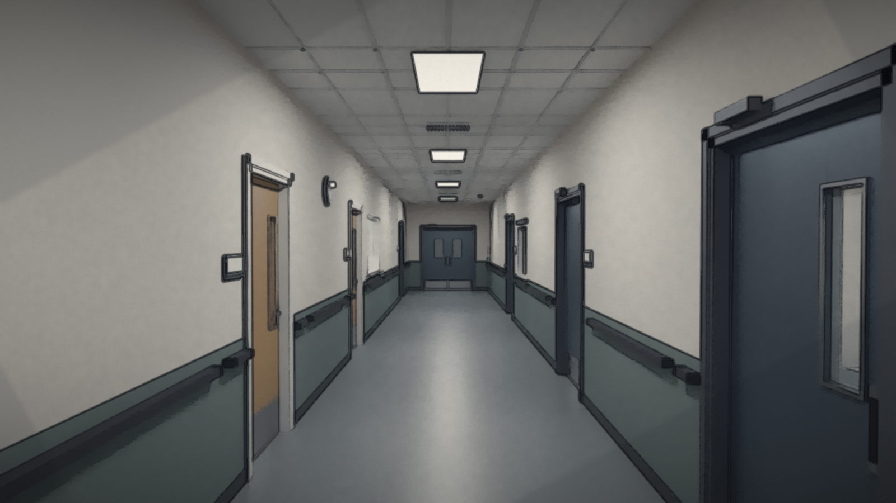
The patients on this ward were sent by the courts. Your job is to see each of them clearly, and to record only what you observe.
ch1_pro_04_corridor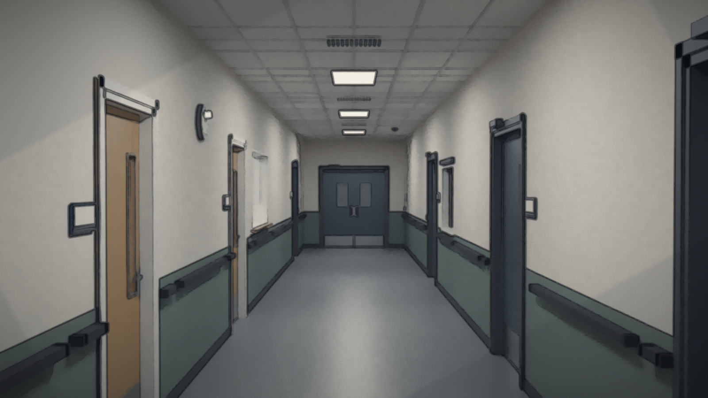
The charge nurse is expecting you at the nursing station. Start there.
ch1_pro_05_startSeven seconds, after the first assessment objective. These panels reuse pilot plates.
All generated chapter lines, including interviewer questions and narrated responses. No patient voice is implied by narrator clips.
Welcome to the ward, Doctor. Orientation continues tomorrow.
ch1_v_3556aa2f5bYou're the new attending? Elias Ward is in the interview room. Here's the archive badge for the transfer paperwork.
ch1_v_8f8a358493Badge visible at all times, Doctor.
ch1_v_3fbdfea147Just checking the door closers, Doctor.
ch1_v_a9b86763fbLeila Rahman. I cover the ward's consultant reviews.
ch1_v_9ffe7dc73dThe patient remains silent. Nursing reports reduced intake; intake chart review is available.
ch1_v_6c7f05ebd6A structured bedside motor and medical assessment becomes available; no diagnosis is automatically confirmed.
ch1_v_4010216886No verbal response. An orderly closes the observation window.
ch1_v_ac5023524fYou note the bedside findings so far and return to general questions.
ch1_v_e7b59eb291That transfer call went out under a credential that has been inactive for months. I checked the board twice. Nobody on my shift asked for it.
ch1_v_2e722d1e12Night shift is meant to be quiet. Whatever that intercom was, it isn't on my board.
ch1_v_644ddc544aI saw your note on Elias. Thank you. The night team will need it.
ch1_v_cea17c0644There's nothing in the notes for Elias. The night team is going in blind.
ch1_v_956fe95776I'm here to assess your health and hear your account. The records question can be documented separately.
ch2_v_82b919d475Are you here to examine me or tell me I'm wrong? ... Then please actually look at what I brought.
ch2_v_b297f7c223(She places two copies on the table.) October twelfth. October fourteenth. Same person. My aunt, Lillian. Different dates.
ch2_v_0112ade4ecIt sounds as though you've had to repeat yourself. Where would you like to begin?
ch2_v_94cc2bf70fWith the pages people keep dismissing.
ch2_v_fa73ffa444My role is clinical care. I won't promise an administrative finding, but I can document your concerns accurately.
ch2_v_b3b08c81fcThat's more than most people have told me.
ch2_v_2d74097e83Where did each copy originate?
ch2_v_533ceae01eOne was a paper record, the other a later archive copy. I worked in records. I know mistakes happen. I also know a question is different from an accusation.
ch2_v_33bb597d68What do you think could explain it?
ch2_v_ffbc340374I don't know. It might be an error. I want somebody to check instead of deciding what kind of person I am for asking.
ch2_v_e92feee071How much sleep are you getting? How do you feel the next day?
ch2_v_e4c54b2b06Four or five hours. I'm exhausted. I try to stop checking the documents, then I think of something else I missed.
ch2_v_d49dc22936An earlier note mentions a mood disorder. Can we discuss what was happening during that period?
ch2_v_42b467571cI've had difficult periods. I'm not saying I'm never unwell. I'm saying the pages still say what they say.
ch2_v_77622c54edWhat other explanations have you considered for the date conflict?
ch2_v_6d5bf9cc3cCopying mistakes. Bad indexing. Someone might have entered something later. I don't know which.
ch2_v_1e617c1f67When the stress feels overwhelming, have you thought about suicide, hurting yourself or somebody else?
ch2_v_7b4f54e390I've felt hopeless in the past. I'm not thinking about hurting myself now.
ch2_v_8df912d541Who might know how your sleep and daily routine have changed? We can discuss what information might be requested and shared.
ch2_v_a63df79106My sister, Dana. I don't want her to think I'm being accused of anything.
ch2_v_12eb49a450(You explain that the purpose and applicable consent will be clarified before anyone contacts her.)
ch2_v_a85a45b47eIf the dates differ, it would establish something about the records. Your assessment still depends on your history, examination and reliable information.
ch2_v_c77698db23I can live with that. Please keep those separate.
ch2_v_e76f466a56Before you go, there are a few more things I'd like to ask.
ch2_v_27fa7bc3b1All right. Go ahead.
ch2_v_9e28d614c4Go home, Doctor. It'll still be unreconciled tomorrow.
ch2_v_25a8288badPass is back on my board. What you saw at the lobby is in the log as you wrote it.
ch2_v_234dbce3fbEscort's waiting at the ward entry. Lobby doors only. Nothing past them.
ch2_v_6107802bf8I've told you what I heard. I didn't see anything, and I'd rather that's how it's written.
ch2_v_e65ac58b06Security said you might want a word about the shutdown. I'll tell you what I can.
ch2_v_d6861d9fc7Your request is logged. Any inspection still needs authorization, Facilities, a safe route and a reason to enter. None of that is in place.
ch2_v_569ec6f01cDoctor. Records said you'd have questions about W0-B. Ask them properly and I'll answer what I can.
ch2_v_8bc484ac9fMorning, Doctor. The W0-B access ticket is still with Information Security. The useful news is that we have patients to see. I can show you the reports, but do not take my summary as your examination. Keep the clinical work separate from the audit request.
ch2_v_48dc11bc7bThe follow-up is in writing. Records still has your source request, Information Security has the credential question, and the clinical work stays with you and the nursing team.
ch2_v_a5a6c1e75eDoctor. A private word, please, before this becomes a corridor rumour.
ch2_v_9cd3758cfbMorning, Doctor. Clinical work first. Once your records memo is with Naomi, come and find me.
ch2_v_d15df2e691Outstanding clinical review still requires an appropriate handoff.
ch2_v_8f3047f758Your phone buzzes as you collect your things at the nursing station. Whatever it is, nothing from today's work goes into the reply: no patient, no record, no ward.
ch2_v_46ca0f741bNothing new on the board.
ch2_v_355df72b81You stop before you send it. A personal message is not the place for records, patients or the inquiry, and nothing from today is yours to share.
ch2_v_3bb0af8b44Partner: Long one? Call me when you're out. Dinner's waiting either way.
ch2_v_7946b713b0Leaving now. Can't talk about the day, but I'm glad you're there.
ch2_v_5617b7220bFriend: Still alive in there? Drinks this week, no shop talk.
ch2_v_b2f0006f24Still alive. Drinks sound good. No shop talk is a promise.
ch2_v_468127e1fbFamily: Just checking you got home all right. Ring when you can.
ch2_v_eaa3139611Heading home now. I'll ring tomorrow.
ch2_v_6b92b2f98eReminder (set by you): Leave work at work. Write tomorrow's list, then stop.
ch2_v_4d2e668624You write three lines for tomorrow, then put the phone away.
ch2_v_0b8273955fYou put the phone in your pocket. It can wait until you're home.
ch2_v_ced08fb21bYou sign out at the staff entrance. The shift is over.
ch2_v_33f9136c8cYou head home. The screen fades out.
ch2_v_c8c5e8dfe4End of Chapter 2: The Missing Hours On record: audit inconsistencies, source disagreement, an unobserved door movement and an uncertain witness recollection. W0-B remains locked; any inspection needs proper authorization.
ch2_v_2391c72ef1Clinical work remains the priority. Review the existing EHR and retain responsibility for outstanding assessment and follow-up. The administrative audit is a separate work item. This handoff does not replace examination or establish new findings.
ch2_v_dd087cd541Begin the new shift with Naomi before accepting outstanding work.
ch2_v_190e761a2fYou retain responsibility for the outstanding clinical review and follow-up. No clinical task is marked completed. The records discrepancy can be investigated separately.
ch2_v_0316f33153Two representations of a maintenance entry display a four-minute discrepancy. One export repeats a minute. The raw time zone, clock source and sort order have not been verified. This is a reported records discrepancy; it does not establish missing time.
ch2_v_9cad577258Confirm who owns the outstanding clinical review at the handover board before pursuing the audit.
ch2_v_439100cd8fThe initial mismatch is recorded as unresolved. Continue the source-clock review at this worksheet.
ch2_v_57c2a2b901Comparison recorded as unresolved. Request the authorized source-system export and preservation of the originals before drawing conclusions.
ch2_v_e6a01a5c44Request preservation of the original records and an authorized source-system export. Ask for the raw offsets, clock source and sort order. Making a request does not grant access or authenticate a record.
ch2_v_380701e9e7Record the comparison as unresolved in Records before requesting source material.
ch2_v_b3464c6913The preservation and export request is submitted. Receipt, custody and source independence still need verification.
ch2_v_6ba24da4b8Request submitted for authorized Records review. Source access and reconciliation remain pending. The originals must be retained; no independent corroboration or loss of time is established.
ch2_v_86f83ce218We have patients to see. Keep the clinical work moving while Records checks the source material.
ch2_v_4e1bd78463The audit request remains unresolved. You retain the outstanding clinical work.
ch2_v_2f12f0a4a4The source request is not yet recorded. Clinical review remains separate from the audit.
ch2_v_e3a70ddb57Clinical review remains assigned separately from the unresolved records inquiry.
ch2_v_4b860054b8Handoff acknowledged. Clinical review remains assigned to you, and the source-export request remains with Records. Continue routine care while the source material is reconciled.
ch2_v_3202c36832Reported comparison Two representations display a four-minute difference; an export repeats a minute.
ch2_v_18da98f624Available clock metadata Raw time-zone offset: unverified. Source clock and synchronization authority: unverified. No authorized raw export has been received in this review.
ch2_v_0ecd6ddc93What correction can this comparison support?
ch2_v_d40a41cf38Complete the current records-review objective first. Clinical review remains a separate responsibility.
ch2_v_ece8665ac6Clock authority and raw offsets remain unverified. Continue with the export-order review at this worksheet.
ch2_v_4719d22798A displayed difference alone does not establish a clock correction. The source offsets and clock authority are still unverified. Retain the original representations and review the missing metadata.
ch2_v_77e025c4e1Clock review recorded: no correction can be justified yet. Raw offsets, clock authority and synchronization history remain requested. The displayed mismatch remains unresolved.
ch2_v_a60e87580fReported export A minute appears more than once.
ch2_v_4b537a942fMissing information Raw event sequence, export sort key and transformation history have not been verified. A display row is not proof of an elapsed interval.
ch2_v_8e0bc51950How should the repeated minute be recorded?
ch2_v_5ee7d18fe4Clock and export-order gaps are recorded. Review source dependencies at the office records-request workstation.
ch2_v_4137f7e5eeThat conclusion exceeds the available source material. Repeated display values can only be recorded as a discrepancy while ordering and transformation history remain unverified.
ch2_v_1ebd05f278Export-order review recorded. Preserve the original representation and request its sort key, raw event sequence and transformation history. Do not reorder or overwrite the original.
ch2_v_8258b5c843Current material The two displayed representations have not been traced to independently acquired originals. Source extraction, clock dependencies and transformation lineage remain unverified.
ch2_v_9002d473feWould receiving another copy establish independent corroboration?
ch2_v_c033796ab5Source independence remains unestablished. Check the preservation request at this workstation.
ch2_v_97e187fd1fA copy can preserve or reproduce a source; it does not by itself establish independence. Shared originals, clocks and export pipelines still need to be checked. No evidence status has been promoted.
ch2_v_627b71e685Dependency review recorded: source independence remains unestablished. Request original capture, clock authority, extraction history and shared dependencies before counting corroboration.
ch2_v_c51369e614Request status Preservation and an authorized source-system export have been requested.
ch2_v_a0e86c16dbOutstanding confirmation No original receipt, immutable checksum or custody acknowledgment is supplied by the current comparison. A request is not confirmation that preservation occurred.
ch2_v_f22c3c89dbHow should the request be tracked?
ch2_v_683a5e1cb7Preservation confirmation, raw export receipt and custody remain outstanding. Return to the Records worksheet to scope the follow-up memo.
ch2_v_dd3103a1a7Sending the request does not confirm custody or preservation. Keep confirmation outstanding and retain the request without claiming receipt of an original.
ch2_v_13101819f5Preservation follow-up recorded. Request confirmation of original receipt, unchanged source bytes/checksum and custody history from authorized Records staff. Receipt and preservation remain unconfirmed.
ch2_v_e5255da0c3Reported Four-minute displayed mismatch; repeated minute in an export.
ch2_v_7860de0228Still unknown Clock authority and offsets; raw event ordering; extraction lineage and shared dependencies; original receipt, checksum and custody confirmation.
ch2_v_d79bb3cff0Standing Discrepancy unresolved. No proven loss of time, independent corroboration or patient finding. Preserve the original representations and keep clinical documentation separate.
ch2_v_72276bed22Choose the emphasis for the next authorized follow-up. Both requests retain all outstanding source questions.
ch2_v_c4988c84b5The unresolved memo retains the reported mismatch and all missing source questions. An authorized technical follow-up is requested; original receipt, preservation and reconciliation remain pending. No independent corroboration or missing-time conclusion is recorded.
ch2_v_446694a131Unresolved memo recorded with clock-authority/offset verification prioritized. Records must also address ordering, lineage, custody and preservation. Source receipt and any reconciliation remain pending. Return to Naomi to acknowledge the outstanding work.
ch2_v_f8797efa45Unresolved memo recorded with source-lineage/custody verification prioritized. Records must also address clock authority, offsets, ordering and preservation. Source receipt and any reconciliation remain pending. Return to Naomi to acknowledge the outstanding work.
ch2_v_8a69a58bf5Keep the records questions with the authorized review. The clinical work still needs its own follow-up.
ch2_v_d4abede45cThe comparison remains unresolved. Source receipt, clock verification and preservation confirmation remain outstanding. Your clinical responsibilities have not been marked completed by this inquiry.
ch2_v_44b4d5810eRecords-review handoff acknowledged. The unresolved memo and authorized follow-up remain recorded. Continue clinical work separately; source material and technical reconciliation are still outstanding.
ch2_v_33cde93c1bVoss steps aside where the corridor is quiet.
ch2_v_3bd0c0ec6fAn incomplete entry can become an allegation very quickly. I'm not asking you to ignore it. I'm asking you to tell me what was actually established.
ch2_v_b611c46f65On record A transfer request to W0-B was logged under a staff credential marked inactive. The requester was not identified. A four-minute displayed mismatch and a repeated minute in a maintenance export are recorded as unresolved. Your source request is pending with Records.
ch2_v_88f76a74c5What do you tell her?
ch2_v_2bd9ccf863Dr Voss wants the records memo acknowledged with Naomi first. Clinical work remains a separate responsibility.
ch2_v_a0371204deWho? The audit shows a credential, not a person. Write that someone did it on purpose and you have made an allegation the record does not support. Tell me what was established.
ch2_v_8a31f68f9fRecords has not verified the clock source or the export order. A displayed mismatch is a discrepancy, not a missing interval. What do you actually have?
ch2_v_4c42ef72b6An inactive credential appears in an archived transfer-request audit. It doesn't identify the person who used it. The export mismatch is reported and unresolved; clock authority, ordering, lineage and preservation are unverified.
ch2_v_9aab902648Good. Document patient-safety concerns separately from information-security concerns. They have different owners.
ch2_v_5d4694e131Factual scope recorded. Talk to Voss again about what the follow-up still needs.
ch2_v_754092e2d5Then separate the owners. What does the follow-up still need, and who has to authorize it?
ch2_v_0f3fb52ed2Factual scope Inactive credential in a transfer-request audit; user not identified. Export discrepancy unresolved; source request pending with Records.
ch2_v_caac1dcc0bYour current authority Attending clinical access only. No credential-audit authority, no source-system access and no authorization for W0-B.
ch2_v_c71936877eNo. W0-B is Security's door, and any inspection needs their authorization and an escort. A records question is not a reason to open a sealed ward. Your access is unchanged.
ch2_v_bf421d6ca9That isn't mine to hand out, and it shouldn't be yours to take. Records holds the source export; Information Security holds the credential audit. Your request stays with them.
ch2_v_1e541135feMissing permissions recorded: Information Security: audit of the inactive credential and who could use it. Records: the pending preservation and source-export request, with clock and ordering metadata. Security: any question about W0-B access policy. No inspection is authorized. Clinical follow-up stays with you and the nursing team.
ch2_v_14ac8c2b99That is a list I can send to people who can act on it. Now tell me what you want to happen next.
ch2_v_0369f0eb10What do you want to happen next? Pick something I can authorize today.
ch2_v_d1370dd35eStill pending Records source request, preservation confirmation and reconciliation. Information Security credential audit. No new clinical finding has been documented in this review.
ch2_v_daeaca34abOn what finding? Nothing in this review documents a new risk to a patient. If your clinical assessment identifies one, escalate it through clinical channels at once and I will back you. It does not ride on an audit memo. Choose a follow-up the record supports.
ch2_v_3e1e72ea43Reasonable. I'll send you the incident-escalation procedure and copy the Records and Information Security leads. Your source request stays open with Records; nothing is closed by this.
ch2_v_804499d6fbFollow-up recorded: written process requested. The records discrepancy and the credential audit remain unresolved.
ch2_v_c176e47cfaI'd rather Records finished its own work first. But a neutral second review is a fair request, and I'll put it to the quality committee in writing. It does not replace your pending request.
ch2_v_569609703eFollow-up recorded: independent reconciliation proposed. The source request, preservation confirmation and credential audit remain pending.
ch2_v_75d5870143Request Mara Ellis asks for two copies of her aunt Lillian Ellis's 1988 record to be checked: a paper record dated October 12 and a later archive copy dated October 14.
ch2_v_29ba5ec975Separation This is an administrative records question. It is not part of the hospital's W0-B inquiry, and Mara's clinical assessment stays in the EHR.
ch2_v_fc856319ccHow should it be sent?
ch2_v_8339146af2Document Mara's assessment in the EHR first. Her records question is referred separately.
ch2_v_1a7b5aa06dMara's date question is with Records, separate from her clinical record. No finding about the copies has been made.
ch2_v_e55fca692bRecords does not need her clinical details to compare two copies. Send only what the question requires; her assessment stays confidential in the EHR.
ch2_v_f3280b1e7aMara is a patient with her own question, not a source for the hospital's inquiry. Nothing links her aunt's record to W0-B. Refer it on its own.
ch2_v_2fe1047a67Referral sent to the authorized Records office: two copies, two dates, origin of each copy to be checked. No finding about the records is made, and nothing in Mara's clinical assessment changes. Her follow-up (sleep and function support, safety follow-up, legal-role clarification, medication reconciliation) stays with the clinical team.
ch2_v_f3cad19bb7The Records analyst has the worksheet open.
ch2_v_23b45b9187The familiar explanations aren't glamorous. They're also where we have to start.
ch2_v_eded46ed65Candidates Clock skew between the console and the export: could explain the four-minute display difference. Migrated location codes: could explain why an entry is labelled with an old designation. Export sorting: could explain the repeated minute. Identifier collision: could explain an entry attached to the wrong record.
ch2_v_8f9f77526eStatus None has been tested against source material; no source packet has been received.
ch2_v_92e0cf3230And when they don't account for every line?
ch2_v_986c5be764Complete the current objective first. The records discrepancy remains unresolved.
ch2_v_d8ebd3e8e5Four candidate explanations are logged as untested. Choose the next check with the analyst at this worksheet.
ch2_v_5562397bb9Skew might cover the four minutes. It doesn't touch the repeated row, and we haven't checked a single source clock yet. One candidate isn't an answer.
ch2_v_ac567b9817Unexplained means unexplained. Contradictory timestamps are a records problem until a source shows otherwise. That isn't evidence of anything else.
ch2_v_93ad1933bfWe preserve the mismatch and keep checking.
ch2_v_d42659b990Candidates logged: clock skew, migrated location codes, export sorting, identifier collision. Each may explain part of the discrepancy; none is confirmed. The discrepancy stays unresolved.
ch2_v_8e81ded588I can start one of these properly this week. Which first?
ch2_v_e5915ec0cbStill open All four candidates; clock authority and offsets; raw ordering; source lineage; preservation confirmation.
ch2_v_fa350f5574Log the candidate explanations first.
ch2_v_41f20fdb59The next check is recorded. The discrepancy and all four candidate explanations remain open until source material is received and reviewed.
ch2_v_c8261b520bNot on what we have. A migration might explain the label, not the timing. Closing it now would be deciding the answer first.
ch2_v_5101bf87fcNext check recorded: source extraction requested through Records' authorized process. It tests clock skew and export sorting once received. Nothing is received yet; every candidate stays open.
ch2_v_108d1ec74aNext check recorded: identifier crosswalk between legacy and current codes. It tests migrated location codes and identifier collision. Clock and ordering questions stay open.
ch2_v_e12bc1b40dNext check recorded: neutral second review requested. A reviewer outside the team re-checks the candidates and the method. No candidate is confirmed in the meantime.
ch2_v_2e2fd01cd9The historical label isn't an operational ward assignment. And the clinical transfer system isn't the security badge system.
ch2_v_79c40221d7What do you ask him?
ch2_v_89436c7b6dHale is not here yet.
ch2_v_fded22fe29That door has a control list. Curiosity isn't on it. Your access is unchanged.
ch2_v_7f21f61313A request in the transfer system isn't a door event. Nothing you've shown me says that door opened. Ask me what you actually need to know.
ch2_v_33b7616b92I'm asking how the restricted designation appeared in a live request.
ch2_v_c3080ed86eAppropriate question. The answer needs an authorized audit, not an unauthorized inspection.
ch2_v_4ffe499dddWhat would a legitimate inspection require?
ch2_v_2692b95cffAuthorization, Facilities, a safe route, and a reason to enter.
ch2_v_3a7f721edeQuestion recorded. Ask Hale for one permitted follow-up.
ch2_v_b84c67d257I can do one of these without anyone breaking policy. Pick.
ch2_v_34b6a970d3Not available Badge access, escort or inspection of W0-B. No authorization exists.
ch2_v_f701640931Ask Hale about the designation first.
ch2_v_7ecbce6900No. Not today and not on my word alone. An inspection needs authorization, Facilities and a safe route first. Choose something I can actually do.
ch2_v_fe86ef8c42Security won't act on a transfer to a non-operational designation while the audit runs. Whether the request put a patient at risk is a clinical question; that review is yours.
ch2_v_07366eed93Follow-up recorded: clinical risk check requested. No patient is moved and no access changes.
ch2_v_d513d20a57You'll get the summary the policy allows: what was logged and when, not the raw badge data. It won't name anyone the audit hasn't.
ch2_v_195634b907Follow-up recorded: permitted report summary requested. The credential audit stays with Information Security.
ch2_v_e559f17047Facilities keeps those. I'll ask them to release what's archived to you through Records. Plans aren't permission to go anywhere.
ch2_v_2f082f4f22Follow-up recorded: archived facilities plans requested. No route or access is authorized.
ch2_v_c697650264I heard the old lift bell. Could've been the test cycle. Sound carries strangely through the pipes.
ch2_v_8ff4b8d2cbWhat do you ask?
ch2_v_26f41fda8bThe technician is busy.
ch2_v_e4af9652e5I didn't say that. I heard a bell. If you write it that way you're writing something I never saw.
ch2_v_d19e3ef134That question suggested an answer. Ask it again without one.
ch2_v_d5851d56d2No. I wouldn't say I did.
ch2_v_0f91fac34dRecorded as reported: heard what sounded like the old lift bell during a scheduled shutdown; possibly the test cycle; did not see anyone use the lift. This is witness memory, not an observation of movement.
ch2_v_40b107bddeAnything else? I've got closers to finish.
ch2_v_9bb48c07c9On record Heard a bell during a scheduled shutdown; did not see the lift used; timing not checked.
ch2_v_c2c7a5ed1eAsk what the technician noticed first.
ch2_v_40ec61fd9dNobody saw the lift move. A remembered bell can't be written up as movement. Choose a follow-up that checks it.
ch2_v_9777f05e13Facilities logs every test cycle. I'll send you the work-order numbers for that shift.
ch2_v_20d40ccfc0Follow-up recorded: confirm scheduled work orders. The bell may match a test; nothing is concluded yet.
ch2_v_3b456cf4c2Follow-up recorded: the statement stands in the technician's own words, including "could've been the test cycle" and "I wouldn't say I did". No inference is added.
ch2_v_9985cf5d0fLate in the shift. I didn't look at a clock.
ch2_v_c523361681Follow-up recorded: timing to be checked against shift and work-order records. No time is assigned from memory.
ch2_v_ff7c764b44You want eyes on the lift lobby. I can send an escort to the lobby doors with you. Not into the lobby, not the lift, not the hatch, and nowhere near W0-B.
ch2_v_feab0e2b3dHale is busy.
ch2_v_704b973bc3No. There's no authorization, no Facilities sign-off and no clinical reason to enter. The pass covers the lobby doors and nothing past them.
ch2_v_27e282d301Escorted pass logged against this inspection. The ward entry doors will open for you. Bring the pass back to me when you're done.
ch2_v_cceeed7acdScope recorded: lobby doors only, with an escort. Lift, service hatch and W0-B remain locked.
ch2_v_111c10e5c5The double doors to the restricted lift lobby are shut. The latch is engaged and the reader shows locked.
ch2_v_cdd31c1336The escort stands beside you.
ch2_v_41d0ddca04The lobby doors are behind the ward entry. You have no reason or pass to inspect them.
ch2_v_4e1f3574feEscort: Not on this pass, Doctor. We look; we don't go in.
ch2_v_4e2c077efaThe doors stay shut.
ch2_v_971c57aaa9Noted: lobby doors closed, latch engaged, reader locked.
ch2_v_a511d6b4aaThe escort's radio goes. Facilities wants the maintenance door checked. You both step along the corridor to look at it, and for a minute neither of you is watching the lobby.
ch2_v_ca4a0299e7When you turn back, the right-hand lobby door stands ajar by a few centimetres. Nobody passed you in the corridor that you saw.
ch2_v_9405e68a84Escort: Someone could have used the maintenance route.
ch2_v_166aed0744Then let's check the approved work orders before concluding anything.
ch2_v_a7613470b0The escort did not watch the doors continuously, and neither did you.
ch2_v_726afefab9Note the doors' state first.
ch2_v_d57aa1d457Lobby doors: observation and follow-up recorded. Return the pass to Hale.
ch2_v_6ce9f5148cEscort: Not on this pass. If someone's in there, Security handles it.
ch2_v_71571e4e3cYou stay in the corridor.
ch2_v_b60b432043Nobody saw the doors opened. A latch that failed, a pressure change or a person are all possible. Record what was observed, not who did it.
ch2_v_6a0c593e1eDocumented: doors closed and latched at first check; ajar on return; the escort and you did not watch them continuously in between. No cause is recorded.
ch2_v_1526338645Escort: Closing them now and calling it in.
ch2_v_cb472c7087The doors are pushed shut and the latch engages. Security has the report: found ajar during an escorted check, cause unknown.
ch2_v_b32d9ffe39Request recorded: Facilities to check the lobby door latch and the corridor ventilation pressure. The doors were found ajar after an unwatched interval; no cause is assumed.
ch2_v_025d159609Well?
ch2_v_e2077e9705The pass was for one inspection. Any follow-up gets its own request.
ch2_v_92aa101d59Hale reads your note and signs the pass back in.
ch2_v_3c322746a4Closed, then ajar, nobody watching in between. That's what goes in the log.
ch2_v_acd159da59The ward entry doors are controlled access again.
ch2_v_aaf21a3b1aTwo archived export representations of the same access event disagree about its date. The time-zone provenance of each is still being reconciled. Neither version is shown to be the original.
ch2_v_77b14691e9Mara Ellis also raised a date question about her records. Where does this belong?
ch2_v_01d066efa1Nothing new at the worksheet yet.
ch2_v_571304ecc5Her note documents her care. An export date conflict is not a clinical finding and does not belong in her record. Her note stays as written and confidential.
ch2_v_2ac30fb7cfA disagreement between two system exports is not a psychiatric symptom. Nothing about it is hers.
ch2_v_2abeaf1879Records technician: Then we preserve the original versions as they were received.
ch2_v_0da71b46beRecorded in the incident record: two export representations disagree on the access-event date; time-zone provenance unreconciled. Mara's clinical note is unchanged and kept separate.
ch2_v_0bdc0700d9Incident record Two export versions; dates disagree; time-zone provenance unreconciled; originals as received.
ch2_v_bfa47d1998How should it be handled?
ch2_v_28caf48ab8Decide where the date conflict belongs first.
ch2_v_ffed06b360Incident record: two export versions disagree on the date; handling recorded; originals unchanged.
ch2_v_47b7f0af38Records technician: We don't edit originals. A corrected copy would be a third version, not an answer.
ch2_v_8675b555e4Nothing is changed.
ch2_v_884961216fEscalation requested through the audit process. Both versions stay as received; no date is chosen.
ch2_v_8ff725b376Both versions are preserved separately with their provenance. Neither is treated as corroborating the other.
ch2_v_3da4bb162eIndependent technical review requested. Until it reports, the date stays unresolved.
ch2_v_3f3872d262The analyst's note is attached to the worksheet.
ch2_v_da806e0920I can show you where the clocks differ. I can't reconstruct this interval responsibly from these records alone.
ch2_v_27489e0333Part of the mismatch is accounted for by clock differences between systems. The rest of the reported interval is not.
ch2_v_4d1497e9daThe analyst only accounts for part of it. Writing the rest off as skew claims more than the records show.
ch2_v_7943633a11Unreconciled is not missing. The records don't establish that any time was lost; they establish that they can't be reconciled yet.
ch2_v_54df9c9968Report recorded: part of the timing mismatch is explained by clock differences; the remainder of the reported interval cannot be reconstructed from the available records. Source, preservation and audit requests remain open.
ch2_v_e3d2759e4aBennett is pulling on her coat.
ch2_v_b1e70fc30aAny luck?
ch2_v_8d87e9107dBennett is busy.
ch2_v_46b79287c7Did you? Or did you find records that don't agree?
ch2_v_4d4a38a331You haven't found anything that was lost. Tell her what you actually have.
ch2_v_c67676f3b7Then you're doing what you're supposed to. Don't decide the answer first.
ch2_v_1a01c8841bShe heads for the staff entrance.
ch2_v_829daf3d70The report says what it can. That's the point of it.
ch3_v_6cfa46b531Your notifications are in the EHR. The survey can wait for a safe handoff.
ch3_v_344d18b42fFurther access is suspended until Facilities signs off. That includes you, Doctor.
ch3_v_d1dc17de40Ward entry, maintenance room, hatch. We meet you at the bottom of the stair.
ch3_v_c47318c2e2Stay with the team, keep to the marked route, and we all come back the way we went in.
ch3_v_9da06ee744Briefing's when your ward is covered, Doctor. Not before.
ch3_v_ab80f48082Maps are on the desk when you're ready.
ch3_v_3108e35788Your patients are covered. Go read your old floor plans.
ch3_v_f75a4cd09bYou've got an inspection briefing. Apparently your day job now includes reading old floor plans.
ch3_v_f7e1eb0efdThe notice: Security and Facilities will inspect the historic-access discrepancy. You attend as clinical liaison for the transfer workflow. Clinical coverage must be in place before departure.
ch3_v_7494f2bc5eThe ward doctor has your list and I'm on until handover. Anything urgent goes to them, not to you underground.
ch3_v_7739049b1bClinical coverage confirmed.
ch3_v_a673f16c1bThe summary lists what Chapter 2 left open: an inactive credential in the transfer-request audit, export versions that disagree on a date, an unwatched door found ajar and a witness who heard but did not see. Nothing in it is resolved.
ch3_v_4e95a0d308Good. We'd hate to lose another psychiatrist to Facilities.
ch3_v_766af470acScope recorded: you attend for the transfer-workflow question only. The building survey belongs to Security and Facilities.
ch3_v_0a721017c8No. Nobody leaves this ward uncovered, inspection or not.
ch3_v_e2e5cfefa3Hale has the current and historic maps side by side. A Facilities engineer has marked the approved areas, the radio channel and the stop conditions.
ch3_v_e45c851e8dThis is an authorized inspection, not a tour. Nobody enters alone; nobody opens an uncleared door.
ch3_v_0a987b9ee7The old drawings weren't consistently revised. We'll establish what exists before we draw conclusions.
ch3_v_8d9e0729b5Hale is waiting for your ward to be covered.
ch3_v_8b359a48fdWhether an obsolete code is still being routed through patient-transfer software. The building survey is ours.
ch3_v_6d42c1dbc2Read the first line again. Nobody enters alone.
ch3_v_6e0b7b1e6cBoundaries reviewed: marked route only; stop on any loss of contact, unsafe air or structure; return by the entry sequence logged on the way in.
ch3_v_80a2e3f89bEntry approval and the Facilities life-safety check are signed. We go down together from the service lift.
ch3_v_70b6b3ca7eCoverage confirmed, approval signed, life-safety check done. We go down through the maintenance hatch in the security wing. Facilities has the key; you're on the team pass.
ch3_v_dae668d28fTeam pass logged: ward entry and maintenance access for this inspection only. The restricted lift, W0-B and every uncleared door stay locked.
ch3_v_cdfd2da7ebThe engineer logs the time and level at the stair foot. Motor noise from the plant, administrative labels, a maintenance inspection tag dated last month.
ch3_v_6dfe924d96Renovations changed the levels. The old plan's 'ground' isn't our current ground.
ch3_v_7eda5fb359A stairwell fuse board, isolated and tagged.
ch3_v_30d22b5defInspection log: level datums differ between plan editions; no conclusion drawn.
ch3_v_368669a173It's a drawing convention, not a fault. Write down what's different, not what it means.
ch3_v_71baf9ff8eExactly.
ch3_v_1df097e9abLogged: current and historic level datums differ; no conclusion drawn.
ch3_v_9e99bbe679The engineer tests the isolated circuit and the air at the end of the sealed corridor. Hale radios control.
ch3_v_efc7e9506dThis area isn't in clinical service. Keep within the marked route.
ch3_v_098b70a6daAn isolated circuit board. Facilities will check it.
ch3_v_0a3cef81beClearance logged: circuit isolated, air and structure checked, threshold opened for the authorized team.
ch3_v_aaef7801cbNobody goes past this board until Facilities says so. Stay with us.
ch3_v_cb97af124dCircuit isolated, air's fine, structure's sound. Opening the end now.
ch3_v_5c96b49ab9The infill at the end of the sealed corridor is taken down along a marked line. Behind it, a threshold room.
ch3_v_1c3226911aHeavy doorframes, faded institutional paint, empty fixtures. A stencil reads LOWER LEVEL B. An enamel plate is fixed beside the inner door.
ch3_v_c18609cfa1Was this designated W0-B?
ch3_v_1cbfd0bd5eThe archival plan says so. We'll verify physical markers.
ch3_v_d6f346b440An enamel plate beside a closed inner door.
ch3_v_b57c4162e0Entry documented: plans compared, signage checked, condition recorded, return route verified.
ch3_v_cc67747280The historic plan shows this threshold and a corridor beyond; the current map shows nothing below the sealed corridor. Logged as a plan-edition difference.
ch3_v_52c426ddf5Stencils read LOWER LEVEL B and SERVICE B. The plate's wording matches the archival plan's room schedule. No sign uses the W0-B code itself; the designation remains the plan's.
ch3_v_da34bf6f2dDocumented with the time: inner door closed, frame intact, dust undisturbed except along the team's marked line, one radiator, one lamp working.
ch3_v_f47f60c39fHale walks it with you: threshold, opened infill, sealed corridor, mechanical corridor, stair. One route, physically continuous, marked.
ch3_v_e867b33757An old observation log lies on the desk.
ch3_v_de4e297bcaNot ours to read. Historic patient records go to Records under its own authority, not into an inspection notebook.
ch3_v_03bcf0543fAn old observation log.
ch3_v_9c64e106ebNo. Leave it where it is. If it matters, Records will request it properly.
ch3_v_14997629a9A shallow wall alcove beside a radiator. The engineer holds the historic plan against it.
ch3_v_1962c6a17eThis alcove should be one bay earlier, according to this drawing.
ch3_v_f86c0f2b3eCould there have been a renovation?
ch3_v_a3668b8f73Yes. Or the drawing is inaccurate. Let's annotate the reference points.
ch3_v_4de5affd8eA shallow alcove beside a radiator.
ch3_v_4b4f235febAlcove: one plan edition differs by one bay; recorded without a cause.
ch3_v_6de4f384a7We don't know it moved. We know one drawing puts it a bay earlier. Pick a way to record that.
ch3_v_c1c6e78595Two later editions agree with what is built; the oldest puts it one bay earlier. Annotated with the reference points. Cause unknown.
ch3_v_73b1c439daI'll add it to the survey request with measured reference points. Until then it's a drawing discrepancy.
ch3_v_5cbd5482bdLogged as found: built position and one plan edition differ by one bay. Renovation and drawing error both remain possible.
ch3_v_988b683ec0Heading back, a faded junction marker looks like one you logged on the way in. The corridor is straight. The written route note is ambiguous.
ch3_v_a94a3f3cc0I thought we'd already passed that damaged ceiling tile.
ch3_v_143c87f3afA wall clock, stopped. A faded marker on the opposite wall.
ch3_v_9e53217f66Nobody's saying that. The corridor is straight. We stop and confirm the route before anyone draws a conclusion.
ch3_v_58895efcbbWe're not moving until we confirm the route. Stay together.
ch3_v_a6fc998c7cThe team holds at the authorized point. Inspection paused for a route check.
ch3_v_6ddd244949Dispatch, confirm the last authorized door event and our safe return route.
ch3_v_176a19b58dDispatch: Receiving. Stand by while Facilities checks the access plan.
ch3_v_3feaccd3ebTwo areas on these plans use identical labels. That could explain our notes.
ch3_v_06f08de719A wall clock, stopped.
ch3_v_83ab77b49bRoute check: ambiguity recorded as it occurred; one continuous return route confirmed with control.
ch3_v_5a41ddc99eWe stay together. That's not negotiable down here.
ch3_v_01ed2d480fRecorded as it occurred: one marker resembles an inbound marker; two plan areas share a label; the route note is ambiguous.
ch3_v_da80c30b10Dispatch: Route confirmed. Last authorized door event is your threshold entry. Return the way you came.
ch3_v_1a1bc55e75One approved, physically continuous route back.
ch3_v_782a29a74cHale counts the team in: himself, the engineer, the escort, you. Everyone accounted for.
ch3_v_1d177f14fbInitial inspection is over. Further access is suspended until Facilities signs off.
ch3_v_b420291955I want the original notes and photographs preserved. There's a discrepancy we should survey properly.
ch3_v_bb5eb88a01No. Access is suspended. Any further entry gets its own approval.
ch3_v_1d9cfbc93cTeam pass returned. Ward entry, maintenance and threshold access withdrawn. Original notes and photographs to be preserved for the debrief.
ch3_v_0d546f576aHale, Facilities and you document separately. Memory, map editions, photographs and access records each keep their own provenance.
ch3_v_55c63f96d3State what you saw, not what you think it means.
ch3_v_9a0f3ab4d7Similar landmarks, uncertain plan revision and one location note that doesn't reconcile yet.
ch3_v_e0f2e0b4c8Did you see it repeat, or did you see a marker that looked like another one? Write what you saw.
ch3_v_6d128f04b0Separate statements. If they agree, that matters only because they were taken separately.
ch3_v_fff3d328a2Correct.
ch3_v_cd7556a794Debrief recorded: similar landmarks, an uncertain plan revision, one unreconciled location note, two plan areas with the same label. Each statement under its own name.
ch3_v_2577d1e662Bennett is in the middle of clinical documentation.
ch3_v_fb03666d25Well, you came back. Your EHR notifications didn't miss you.
ch3_v_8cbde52870Later. Your patients first; the corridor isn't going anywhere.
ch3_v_96259ee150Those can wait long enough for a safe handoff.
ch3_v_907ced0975Clinical work resumes. The inspection stays with Security and Facilities.
ch3_v_63fc907f5fFacilities proposes a controlled, nonintrusive comparison of room identifiers, floor plans, reference points and instruments, contingent on safety authorization.
ch3_v_f0b726d2c4Engineer (note): We need independent measurements, not another set of assumptions.
ch3_v_4b9bd02202Hale (note): No repeat entry until the inspection route is cleared.
ch3_v_90c697cf5cThe records workstation.
ch3_v_5770568facSurvey request: nonintrusive comparison pending safety authorization. Repeat entry suspended.
ch3_v_fc1fbeccbeHale's reply: No repeat entry until the route is cleared. The survey comes first.
ch3_v_f84de77f4fTwo properly logged observations that cannot be reconciled by reference points, clocks or instruments. We're not there.
ch3_v_aa19bb5a92Survey request supported; repeat entry remains suspended.
ch3_v_f95e26fb73Two preliminary measurements of the same corridor section differ. They were taken with different instruments, from different reference points, at different times. Neither their reference-frame equivalence nor their independence is established.
ch3_v_fcab647daaThese measurements don't match, but they weren't taken under identical conditions.
ch3_v_a15ae0bd0bSo we have a reason for a more controlled review, not a conclusion.
ch3_v_294a212de9The comparison worksheet.
ch3_v_309c97a5efMeasurements: unresolved; protocol requested; area restricted.
ch3_v_284120d331No physically impossible dimension is confirmed. Two measurements under different conditions disagree; that is all.
ch3_v_02066cfaaeMarked unresolved_measurement: values, instruments, reference points and times kept as taken.
ch3_v_374ef9a513Protocol requested: same reference points, calibrated instruments, logged clocks, two independent teams.
ch3_v_56ec34d400Restricted status maintained. No entry until the protocol and safety authorization are in place.
ch3_v_26e8816d9cVoss reads the source notes before the summary.
ch3_v_f32e82add6Do not change the original measurements to make the summary read cleanly. Also don't present an unexplained difference as a discovered physical law.
ch3_v_6997c439dfUntil we establish safety, access remains restricted.
ch3_v_84b226ca98Voss is busy.
ch3_v_19b3e78c37No. The originals stand as taken. An average of two incomparable numbers is a third number nobody measured.
ch3_v_dad5952c37Good. I'll authorize an independent engineering assessment if it can be done safely.
ch3_v_d46cc1dfcbReport submitted. Access remains restricted.
ch3_v_8eab71a986End of shift. A notice: Facilities has preserved the raw inspection images for authorized review.
ch3_v_2fb9cc7298One corridor photograph seems to disagree with one edition of the plan. Its camera position, lens and the plan revision are unverified.
ch3_v_86b2ff1c60Photograph logged for authorized review with its unknowns.
ch3_v_e25f95c49dCamera position, lens and plan revision are unverified. It goes to the authorized review as it is, not as proof.
ch3_v_d9f958430cLogged for authorized review: camera position, lens and plan revision unverified.
ch3_v_cdd935c623End of Chapter 3: Beneath the Hospital On record: plan-edition differences, an alcove one bay off one drawing, an ambiguous route note, unresolved measurements and an unannotated photograph. No loop, no changed geometry. Access restricted pending survey.
ch3_v_dbed14252dWe knew the drawings might be wrong. That didn't explain why I kept wanting to look again.
ch3_v_4396096a84Stop word is 'hold'. Anyone says it, everyone stops and we come out.
ch4_v_2adc2e7bb2Lobby doors, the team, a watch that doesn't blink. That's the test.
ch4_v_5b7a61f8e7Different questions, different evidence. Come and find me when it's a clinical one.
ch4_v_121d46bae1Nobody enters pending the independent safety review.
ch4_v_7603e8679cTwo incident files. Keep them that way.
ch4_v_cb1439b960We are not here to settle a theory. We have observations we can't yet reconcile and a restricted area with possible safety implications.
ch4_v_52e0cb6ec6Some old plans are incomplete. Other differences remain unexplained.
ch4_v_bca5ffb4d4The inactive-credential transfer request remains an information-security question.
ch4_v_9af462f4b5Precisely. Don't join two incomplete cases just because their labels resemble each other.
ch4_v_8a7f58f812No. The transfer audit and the spatial survey are separate incident files until something other than a label connects them.
ch4_v_76cf142801Good. Both files say what was observed and what wasn't.
ch4_v_90709385e8Then we agree. The restriction stays until the safety review signs off.
ch4_v_662440660bI'll ask for an outside reviewer. The safety review still comes first.
ch4_v_c48feb9d91A junior administrator's draft summary of the Chapter 3 inspection reads: "Cause: confirmed mapping error." No review has established a cause. Facilities' own file says unresolved.
ch4_v_1ff1164139Voss (note): Then the summary is wrong. Correct it. Keep the first version in the revision history.
ch4_v_42c6361898Official finding: contradiction observed, cause unresolved. Revision history kept.
ch4_v_8e9de32577Not established. A mapping error is one candidate explanation; no review has confirmed it. The draft stays open for revision.
ch4_v_1b20db42e0Not established either. Nothing the inspection recorded supports that wording. The draft stays open for revision.
ch4_v_288bb5c5edOfficial finding entered: plan editions and observations disagree; cause unresolved; independent review pending. The first draft is kept in the revision history.
ch4_v_411add06eaAn unusual facilities report doesn't change the standards for evaluating a patient who is distressed or sleeping poorly.
ch4_v_f7735a96fdRahman is reviewing notes.
ch4_v_4988fca264No. A building report isn't a clinical finding, and a patient's distress isn't building evidence. We assess the patient.
ch4_v_01fc5f7786Both are important. Different questions need different evidence.
ch4_v_85560df194Mara is in Interview Room A for her follow-up appointment.
ch4_v_0549b43f95Did they decide one of the dates was wrong?
ch4_v_b9df5b109fMara is resting.
ch4_v_e1f7218853You stop yourself. Nothing has established that, and giving her an answer the review doesn't have would not be honest.
ch4_v_eae37d2339I wish somebody had said that the first time.
ch4_v_5a1ff86379I'd also like to talk about how the insomnia has been affecting you.
ch4_v_f593bef6fcThe rest of the appointment is about her care: sleep, anxiety, how she is managing day to day, and when you will see her again. None of it goes into the incident record.
ch4_v_06b0b5dc84The outside reviewer compared the retained originals after accounting for the known export display differences. A time-order contradiction remains. How independent the originals are is documented, not assumed.
ch4_v_5e254efab5I can't make these versions agree without excluding one of the originals.
ch4_v_5e4b441bd7Retained originals: time-order contradiction preserved with the checks performed.
ch4_v_d5ba92ef1aExcluding a record to make the others agree would destroy the contradiction, not resolve it.
ch4_v_005d948389Both originals preserved. Checks listed: display-difference correction, clock-source comparison, custody trail. Independence documented per record. The time-order contradiction stands.
ch4_v_efe559c1a8You step into the nursing station on a break. Your partner is calling.
ch4_v_7d0cb79b02Partner: I know you can't say much. I just wanted to hear how you are.
ch4_v_6a83ae6cabThe clinical worklist.
ch4_v_4381f9ea20You don't. The inquiry is confidential, and a personal call is not where it gets worked out.
ch4_v_fb842b846bYou say it's been a hard week and leave it at that. It helps more than you expected.
ch4_v_d7ec0333fbYou keep it short. A promise to call later, and back to work.
ch4_v_e4583480b8You say you'd rather not talk about work, and that you'll be home on time. They take it well.
ch4_v_8cf2c06b30You step into the nursing station on a break. A friend is calling.
ch4_v_c23ca8045bFriend: You've gone quiet on us. Everything all right?
ch4_v_a087ac5ce0You step into the nursing station on a break. Family is calling.
ch4_v_60584216cbFamily: We haven't heard from you in a few days. Just checking in.
ch4_v_2b4a5515f4You step into the nursing station on a break. No call: the reminder you set for yourself comes up instead.
ch4_v_4d987589f4Reminder (set by you): Eat something. Leave on time. You can't carry all of it.
ch4_v_2ce683b952You don't. Inquiry details belong in the authorized record, not on your phone.
ch4_v_1a2008d6fbYou send a short message to someone you trust. It helps more than you expected.
ch4_v_0b60b7d969You snooze the reminder. It will come back.
ch4_v_fc93fae588You decide you'll leave on time tonight, whatever is still on the list.
ch4_v_0fc51ad4a7You step into the nursing station on a break. Your phone shows only the break reminder you set at the start of the week: Eat something. Leave on time.
ch4_v_1590bdd134You dismiss the reminder and get back to work.
ch4_v_a11be751f7Facilities wants to see whether the lobby door does it again. Authorized test, continuous watch, access logs pulled before and after. You come as the person who logged it the first time.
ch4_v_3ecdb9a7efTest pass logged: ward entry only, for this check. The lobby doors themselves stay locked.
ch4_v_7f8929cecfThe doors are closed and latched. The team watches them continuously for the agreed interval. Nothing moves. The analyst pulls the access log and the mechanical inspection notes.
ch4_v_83434dd66aCan the records establish there was no authorized entry between checks?
ch4_v_74794c9b28Not yet. We'll preserve the access logs and mechanical inspection results.
ch4_v_2687f45b1fThe lobby doors are behind the ward entry.
ch4_v_cea16c4283Controlled check: no movement during the watch; repeatability open; logs preserved.
ch4_v_5687083abdThe second log came from the same logging system as the first, and nothing happened during the watch. Two entries from one system are not independent corroboration.
ch4_v_d229fc3468Recorded: controlled watch with no door movement; an authorized entry between the original checks is not excluded; logs and inspection results preserved. Repeatability open.
ch4_v_1136e7f737Pass back, please. The restriction stands.
ch4_v_597e6324edTest pass returned. The ward entry doors are controlled access again.
ch4_v_6280dca161Voss, Hale and Rahman around the desk.
ch4_v_d818bdb81ePatient care must continue regardless of the investigation.
ch4_v_ad839c329bThe site restriction stands until safety criteria are met.
ch4_v_e41959b3b2We can meet both obligations. What we cannot do is issue a false explanation.
ch4_v_e35ec3414cThe required safety notifications have already gone out.
ch4_v_8d482a0518No. Notifications go out whatever we think the explanation is. They already have.
ch4_v_fc6104a183Agreed. An outside team with its own instruments, under Hale's restriction.
ch4_v_e3103b7a7eOne briefing, three obligations: care, safety, record. I'll schedule it.
ch4_v_113f5b8487Noted in the record under your name. The restriction and the care plan stand.
ch4_v_e635e7f752Controlled inspection, one corridor, one straight walk out and back. Stop-and-return protocol, signed escort roster, an operations contact on the radio upstairs, and a rescue fallback if we lose contact.
ch4_v_e4e710d543Two survey teams. Each keeps its own sheet and its own notes. Nobody copies from anybody.
ch4_v_e7e5ea70dfNo. Nobody goes below without someone upstairs who can call it off.
ch4_v_8a59a01d5cTeam pass logged: ward entry, maintenance and the threshold, for this inspection only. Operations contact confirmed on the radio.
ch4_v_6262297d26Beside the alcove, a damaged wall panel: a diagonal crack, and the number 17 stencilled in faded paint.
ch4_v_e96249f95aBoth teams, your own sheets. Write down what you see, not what the other team says.
ch4_v_0c6c8662c0A corridor alcove. An old radiator under a damaged wall panel.
ch4_v_dd47a4aa1bSeparate sheets. Copying makes one observation look like two.
ch4_v_37d6dd953dLogged twice, independently written: panel 17, diagonal crack, beside the alcove. Time noted on both sheets.
ch4_v_136f2dba91The team walks on along the permitted corridor. Straight. No turns.
ch4_v_4886356979At the junction marker, a damaged wall panel: a diagonal crack, the number 17 in faded paint.
ch4_v_96d0879345Escort: That damaged panel. We already passed it.
ch4_v_294caaf778Stop. Confirm our position and use the documented return procedure.
ch4_v_f33ae5d570Suspend the test. Preserve both raw observation streams. Begin safe return.
ch4_v_a806787a4dA wall clock, stopped. A faded junction marker on the opposite wall.
ch4_v_8d0d3edf24The junction marker. Panel 17 was logged here and at the alcove, on one straight walk. Recorded as observed repetition, unverified.
ch4_v_71672cbdf7No. The test is suspended. Everyone comes out now.
ch4_v_cd02497c50Both sheets list panel 17 twice, at two different points on one straight walk. Both still came from this one walk.
ch4_v_b47706f941The team turns and walks out the way it came. The threshold is where it should be.
ch4_v_507f6653abHold.
ch4_v_2b5ee25beaEveryone stops. Hale logs the stop condition and the time.
ch4_v_896e40ad18Request logged. Sheets sealed as they are.
ch4_v_a0291ee0eeHale counts the team in: himself, the engineer, the escort, both survey teams, you. Everyone accounted for.
ch4_v_15d7559413Test suspended. Both sheets go to the record as written.
ch4_v_b11f2c68cdNo. One walk was authorized. Any repeat needs its own approval and its own instruments.
ch4_v_08a625aa81Team pass returned. Ward entry, maintenance and threshold access withdrawn. Raw sheets preserved.
ch4_v_bc0674bc22Voss has both survey sheets on the desk, unaltered.
ch4_v_f4537c811cWhatever the final explanation, we won't make the discrepancy disappear by changing the wording.
ch4_v_0c3a4c42d2None of this goes in a patient's chart.
ch4_v_08be2f99b9Two sheets from one walk is an observed repetition. It isn't an independent result. The record says what we can show.
ch4_v_c2a69ed581Filed. Observed repetition, unverified. Both sheets attached as written.
ch4_v_7a02356973Area remains restricted. The original observations stay intact.
ch4_v_3c53cca4e6Then the last question is how we keep oversight, inquiry and safety in the same room.
ch4_v_3b09b2ca9cAn outside inquiry, its own instruments, under Hale's restriction. And patients keep receiving their care without their histories becoming part of the building investigation.
ch4_v_e27fd66597Agreed.
ch4_v_89a545299dThe restriction governs until the safety review says otherwise. And patients keep receiving their care without their histories becoming part of the building investigation.
ch4_v_0a9bb93c02Every person accounted for. Every exit checked.
ch5_v_d070f91c71And nobody forgets why this matters to the patients upstairs.
ch5_v_7ff6d6a9e5Whatever we find, the record says what we can show.
ch5_v_0f251bb988Hale reads the inspection authorization: staffing, the escorted route, radio contact, exit procedure.
ch5_v_02ed017586What exactly are we trying to establish today?
ch5_v_a2724261c5Whether the independent observations can be repeated under the approved inspection procedure.
ch5_v_277b883090If the conditions change, the operation stops. We don't continue because we're curious.
ch5_v_6c7d3aedb1All three safeguards are mandatory: originals preserved, return procedure verified, clinical coverage confirmed.
ch5_v_2c745a1130Logged. New sheets, new notes, originals untouched.
ch5_v_487df585e4Return route walked and checked. Stop word is 'hold'.
ch5_v_d2e7ae9405I'm covering the ward. Nobody upstairs goes without.
ch5_v_a6fed6c3abIf we get an answer, good. If we don't, we come back with everyone who went down.
ch5_v_98a30ce3a9No. Nobody goes down on their own.
ch5_v_f0f1027813Team pass logged: ward entry, maintenance and the threshold, for this inspection only.
ch5_v_65c2c7fb3fTwo recordings of the former treatment room's inner door, over what looks like the same interval. In one the door is shut. In the other it stands open.
ch5_v_454f0d59f7Have the timestamps been reconciled?
ch5_v_1ff6fabf10The clocks were checked, but I want the original timing records reviewed again.
ch5_v_678dda6392Nobody opens that door to investigate.
ch5_v_0cd6994cd9Observation room records. Not part of this inspection.
ch5_v_e98b87c7b6Two recordings, one door, two states. Preserved as unresolved; timing records under review.
ch5_v_f3a913fa98No. We record it. We don't go in.
ch5_v_564e9cc449Both recordings logged as they are, with their clock sources. The contradiction is preserved as an unresolved observation.
ch5_v_49363fd4d3Hale counts the team in. Everyone who went down came back.
ch5_v_312ba98c65Recordings sealed for the analyst.
ch5_v_64462982c1No. The inspection is over. Any further entry needs its own approval.
ch5_v_abf34b599aTeam pass returned. Ward entry, maintenance and threshold access withdrawn.
ch5_v_623e239d1aThe records historian's notes.
ch5_v_1df18cd348Historian: Some missing records are ordinary archival failures. Different numbering systems, incomplete transfers, boxes that were never indexed.
ch5_v_255beba258And the ones that don't fit the chronology?
ch5_v_8e6ca76bedHistorian: Those remain unresolved. The mistake would be pretending they all have the same explanation.
ch5_v_a34295caedThe Records worksheet.
ch5_v_e819ea73b7Timeline from authenticated records; unknown provenance flagged; archival gaps kept apart from misconduct.
ch5_v_d0a93ec59bHistorian: There's no evidence for that. Some gaps are filing; some are unknown. One name for all of them would be invention.
ch5_v_93e1860840Timeline rebuilt from authenticated entries. Unauthenticated entries listed separately.
ch5_v_30a101ac81Unknown-provenance entries flagged, not removed.
ch5_v_93b739a8fbArchival gaps and proven misconduct filed under separate headings. Nothing moved between them without evidence.
ch5_v_d8391c204cThe independent analyst's report.
ch5_v_567d388b24We've verified the integrity of the files submitted for review. That doesn't establish every interpretation.
ch5_v_1b3f81a146But there is a discrepancy.
ch5_v_eee536cd96More than one. Some are explainable. Others remain unresolved.
ch5_v_48811ed26fNone of this should become part of a patient's psychiatric formulation simply because somebody complained about the same location.
ch5_v_7fd54e0a71We need two separate records: the clinical assessment and the environmental investigation.
ch5_v_5f5ad0f1dfThe office workstation.
ch5_v_7045ae29acI'd ask you to revise that. A conclusion about mechanism goes beyond what the official evidence establishes.
ch5_v_b5d613569eThat's what the evidence supports.
ch5_v_dc0d516c3eAgreed. Bounded, documented, stoppable.
ch5_v_b1b7a4d3edDoctor, I need you for something that doesn't involve the basement.
ch5_v_33f27d7e80That sounds refreshing.
ch5_v_15899bbb72A patient has questions about the plan, and we've got an outstanding follow-up before evening handoff.
ch5_v_98d7f1554aIt can't. The review doesn't get to decide when patients need us.
ch5_v_fe07666b79Questions answered within your role; the follow-up handed to the receiving team with a named deadline before evening handoff.
ch5_v_423f6321bcEverybody's talking about Ward Zero, but the patients still need people to show up for them.
ch5_v_851d43a3b3That's why we're here.
ch5_v_3a75e5a062Good. Because the EHR still hasn't learned to write its own progress notes.
ch5_v_3bcfb78a8cFour files on the worksheet: original recordings, technical measurements, physical marker logs, and an exported summary.
ch5_v_ec8fcf2cfbWe can authenticate the recordings. We can verify the measurement procedure. We can also establish where some of the evidence shares a common source.
ch5_v_7458ebf1a7Shared sources counted once. A reproducible discrepancy the technical review cannot explain; mechanism not asserted.
ch5_v_2c0c5adde4The exported summary came from the same recordings. Counting it again would count one source twice.
ch5_v_3319d5801fWhich means we shouldn't count those records twice.
ch5_v_fc420e7bcbCorrect. After accounting for shared sources and known errors, the remaining observations still do not agree with the documented physical layout. A reproducible discrepancy our current technical review cannot explain.
ch5_v_f08af33da8Then let's make sure that's how it's reported.
ch5_v_c640918a0fWe've established that the observations remain inconsistent after independent review. We haven't established why.
ch5_v_17d3ed0748Ward Zero stays restricted.
ch5_v_e966e1f938Any operational changes must protect continuity of care.
ch5_v_395a95876fWhat do we tell independent oversight, and what further investigation do we authorize?
ch5_v_cda2421584You've been involved since the first transfer discrepancy. What's your recommendation?
ch5_v_d7b257e9ffWe cannot make uncertainty disappear by declining to document it.
ch5_v_872db3807aThen we prepare a factual referral.
ch5_v_f450e8717fThat's a defensible safety position.
ch5_v_d2c7b386fcAs long as patient care and access controls are protected.
ch5_v_1272cc7fc9I heard the hospital is still reviewing some old records. Does that mean my aunt's record is one of them?
ch5_v_9d256c2fe4You stop yourself. Nothing in the building review says anything about Mara's health, and her assessment stands on its own.
ch5_v_9f9b34a813I can't give you an explanation we haven't established.
ch5_v_4a5688b9b5I think what bothered me most was feeling like no one wanted to listen.
ch5_v_4ab9ce6329You deserved an assessment based on the information available, and an opportunity to explain your concerns.
ch5_v_975ccb410dI know I'm not always easy when I'm frustrated.
ch5_v_1984a489efFrustration doesn't make your questions irrelevant.
ch5_v_9789e8c0c5You deserved an assessment based on the information available, and an opportunity to explain your concerns. The discrepancy you raised remains part of the authorized historical review. I can't give you an explanation we haven't established.
ch5_v_e33778a176Voss signs the external referral. The originals stay here; the limitations are listed on the first page.
ch5_v_55dff1c4aeThis may take longer than any of us would like.
ch5_v_ee9604b2d4Referral sent. Originals retained.
ch5_v_7561b8e317The old entrance is sealed under documented restrictions, with a periodic review date.
ch5_v_b1dddbf86cNobody enters without authorization.
ch5_v_e7ca417c26Preserved. Closing a door doesn't mean pretending nothing happened.
ch5_v_ff594228f5An accountable review goes ahead: oversight, limited access, defined stop conditions.
ch5_v_6078c47824What happens if the next review still doesn't answer everything?
ch5_v_1e490edc9eDr Rahman is busy.
ch5_v_624fb131a0Uncertainty isn't permission to abandon our standards.
ch5_v_6e6987d40dMorning, Doctor. Ready for rounds?
ch5_v_b71c02f84fWhoever needs us.
ch5_v_8cb153923fWhat the record shows:
ch5_v_943f107714The authenticated findings went to qualified external reviewers, with the originals preserved.
ch5_v_5e8f368688Ward Zero is sealed under documented restriction, with its evidence preserved and a periodic review.
ch5_v_d363d9ef08A limited, accountable inquiry continues under independent oversight and stop conditions.
ch5_v_0fdc65f6a8The corridor repetition stays on record as observed and unverified.
ch5_v_671bd8c9a7After shared sources were counted once, a reproducible discrepancy remains unexplained.
ch5_v_e9436f41a1Mara's questions were heard, and her care stayed her own.
ch5_v_15fcc55cb2Patient care never waited on the investigation.
ch5_v_ace36ae65dUI images use Godot 4.7, Linux X11 and Mesa llvmpipe. Environment plates use Blender 4.3.2 Cycles. These are review evidence, not Mac acceptance.
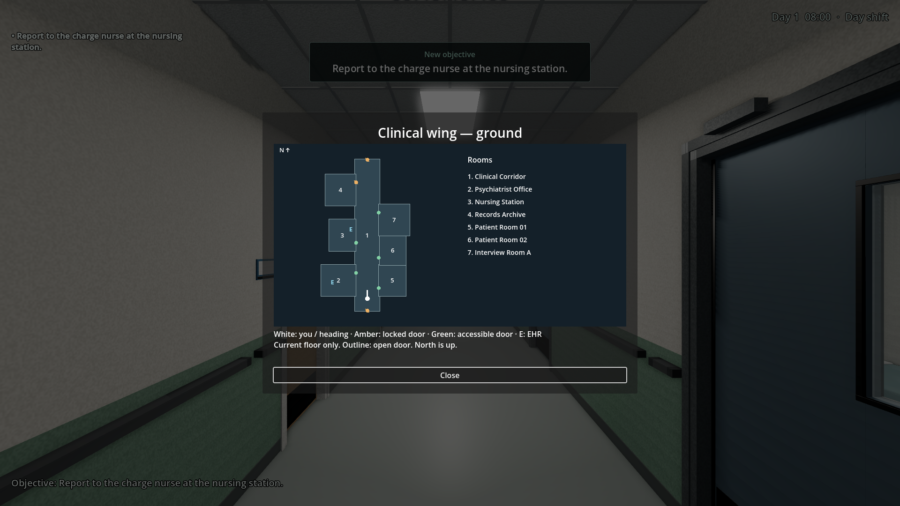
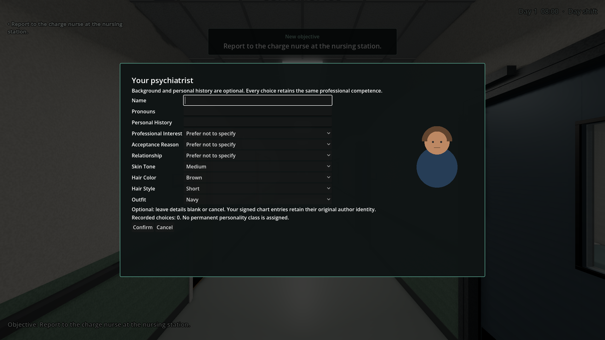
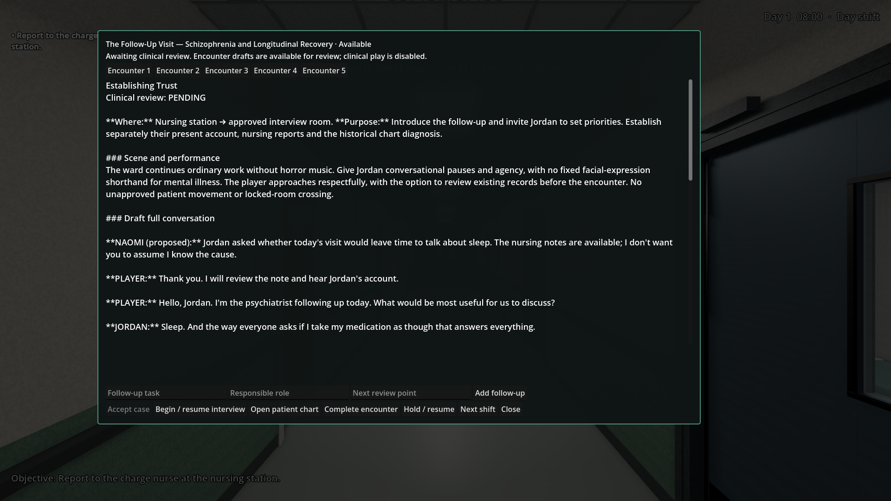
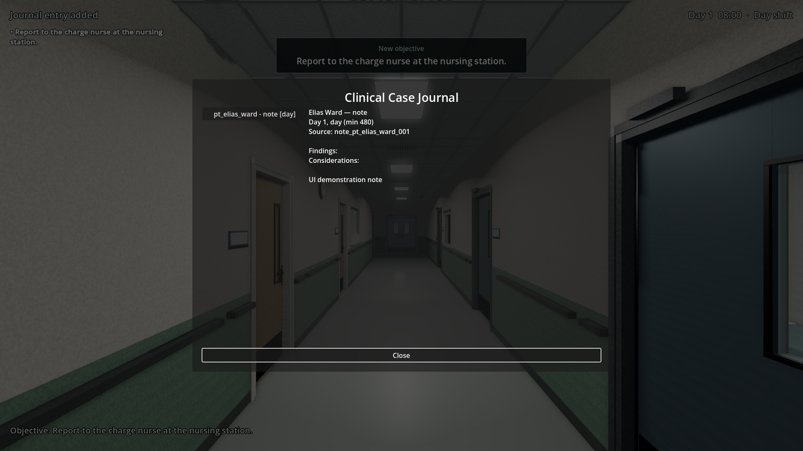
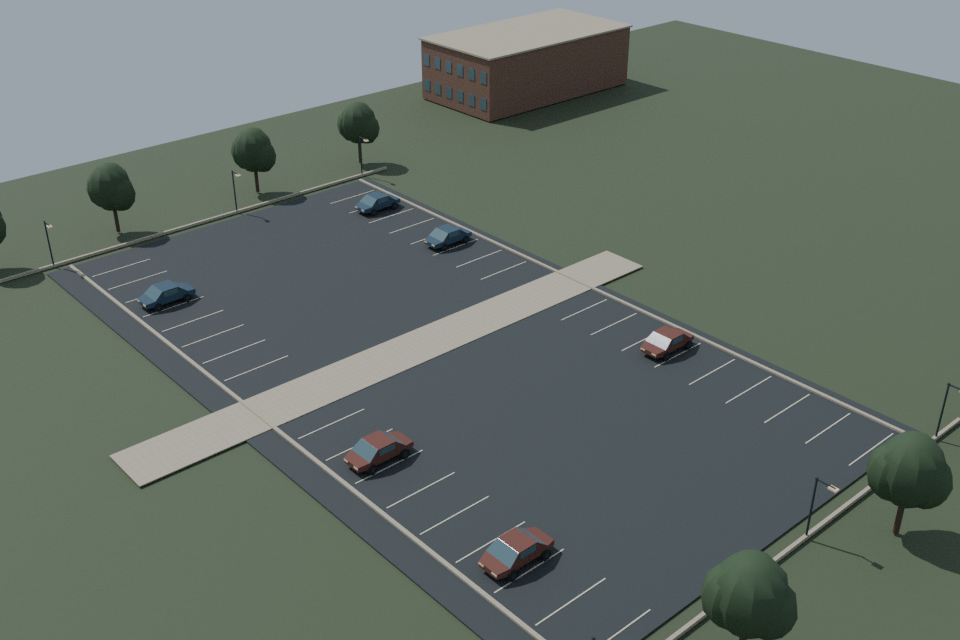
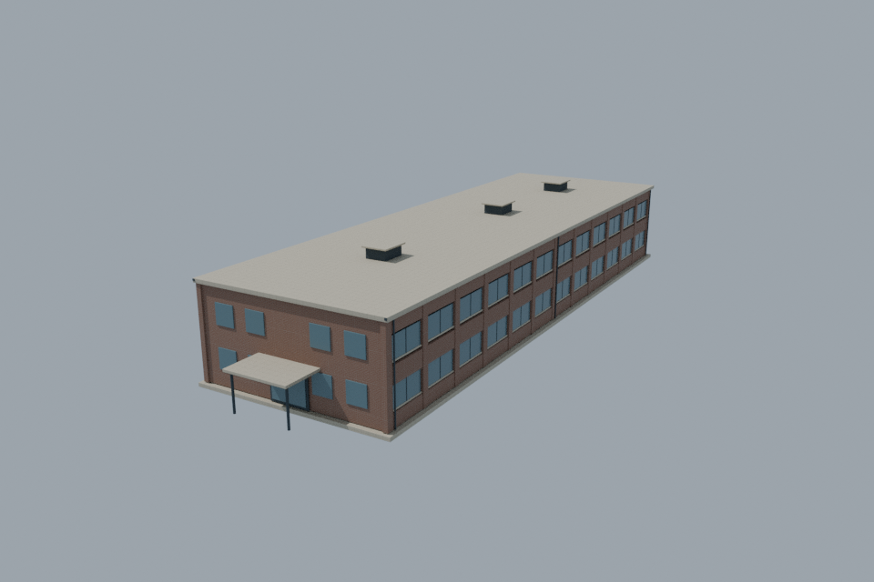
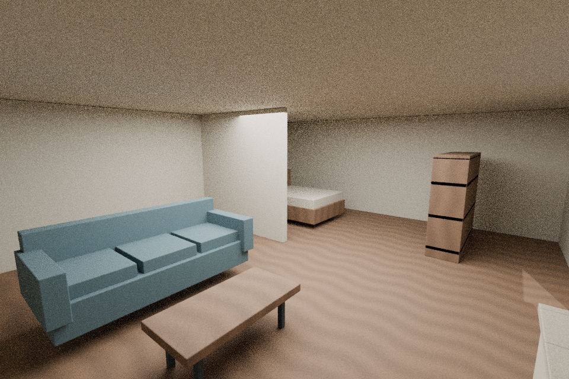
Jordan clinical activation is a separate decision: exact case packet.